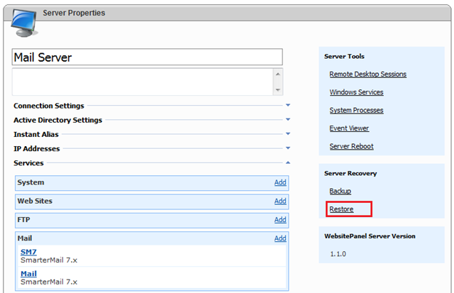

Backup and Restore Hosting Resources
Translations:
WSP has built-in backup/restore functionality allowing you to backup hosting space items (web sites, FTP accounts, databases, etc.) and in case of disaster recover them.
WSP supports 2 backup types:
-
Hosting Space and all nested hosting spaces
-
Server and all server services
Setting Up Backup/Restore Module
Backup/Restore Temporary Folder
WSP Enterprise Server uses backup temporary folder during backup and restore for intermediate file operations.
To configure temporary backup folder perform the following steps:
1. Using Windows Explorer create a new folder somewhere on the hard disk, e.g. c:\WSPBackupsTemp.
2. Allow "write" NTFS permissions on that folder for ES application pool identity. The pool of WSP Enterprise Server works under "WSPEnterpriseServer" account, so this accounts should have "write" NTFS access to backups temporary folder.
3. Specify this folder in "System Settings" as described here.
Backups Store Folder
Both WSP resellers and users have an ability to save/read backup to/from their existing hosting spaces only, but WSP administrators can save/read backups from any server local folder or UNC path.
If you are going to place backups to some local folder or UNC path (e.g. c:\WSPBackups") WSP Enterprise Server should have "write" access to that folder like described in the previous section.
Backing Up Data
Backup Hosting Space
Backup Server
Restoring Data
Restore Hosting Space
Restore Server
